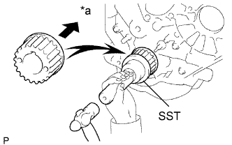

ПЕРЕДНИЙ САЛЬНИК КОЛЕНЧАТОГО ВАЛА > УСТАНОВКА |
| 1. INSTALL FRONT CRANKSHAFT OIL SEAL |
Apply MP grease to the lip of a new oil seal.
Using SST and a hammer, tap in the oil seal to a depth of 0.5 mm (0.0197 in.) from the oil pump case edge.
| 2. INSTALL CRANKSHAFT TIMING PULLEY |
|  |
Align the key groove of the timing pulley with the pulley set key.
Using SST and a hammer, tap in the timing pulley with the flange side facing inward.
| *a | Inside |
| 3. INSTALL TIMING BELT |
Install the timing belt (See page Нажмите здесь).